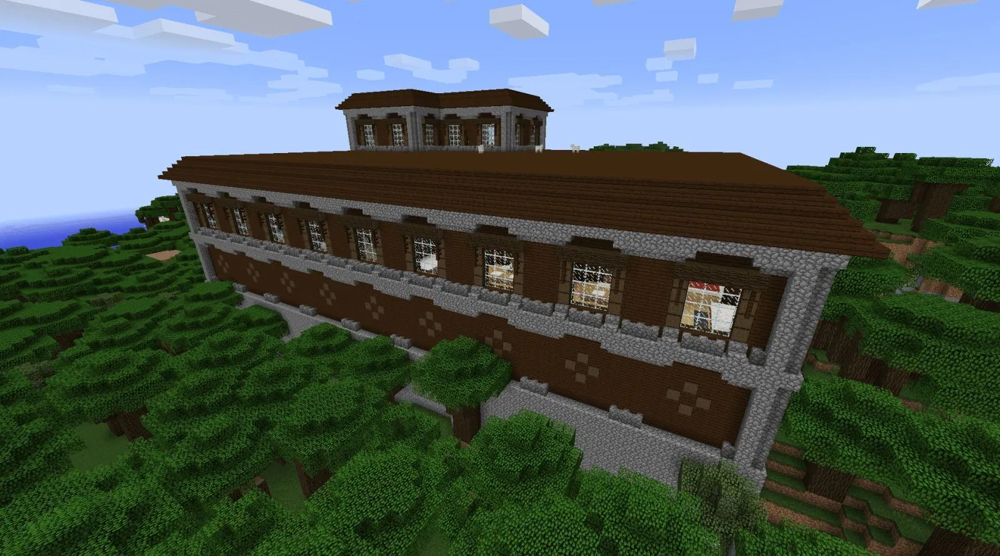
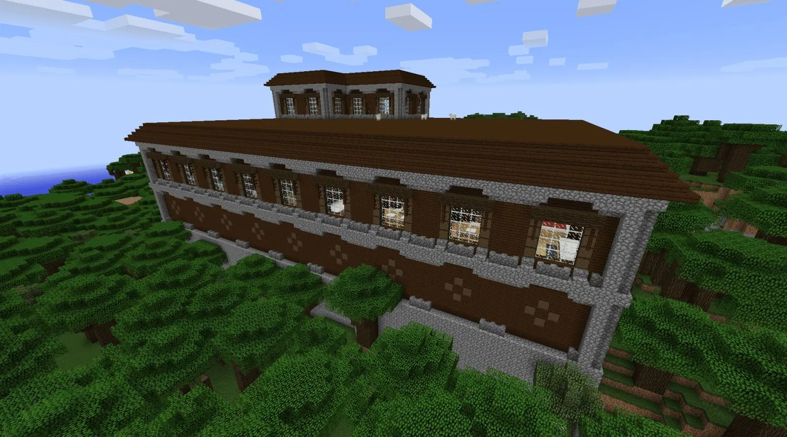

The Overworld
 

Biomes
The Overworld contains a diverse number of biomes such as Taiga Forests, Ice Spikes, Dark Oak Forests, Deserts and Jungles.
Structures
There are also many structures such as Villages, Desert Temples, Igloos, Mansions and Jungle Temples.
Ores
Many resources are mined through ores such as Iron, Diamond, Emerald and Gold.
Bosses/Sub-bosses
While there are not any Main bosses in the Overworld, there are some optional sub-bosses due to their immense strength and high health points. These bosses include:
-
The Warden
Found in the Deep Dark is the Warden, a monster who relies on sound to find and destroy the player with high damages smashes and a long ranged sonic boom that pierces through blocks, as well as being very durable.
-
The Elder Guardian
On the other hand, the Elder Guardian is found in Ocean Monumments, protecting its treasures of gold blocks. It applies as special status effect - mining fatigue - on the player to reduce their speed in breaking blocks, as well as being able to shoot lasers from its eyes.